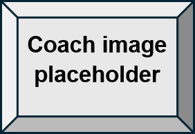
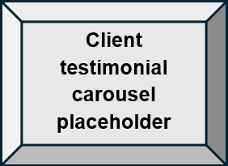
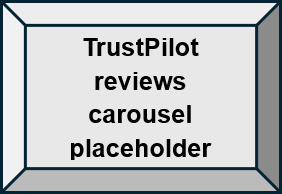

Why Trust Us? See Our Credentials and Meet Our Coaches
At Life Balance Coaching, we understand that choosing a coach is an important decision. That's why we are committed to providing you with all the information you need to feel confident in your choice. Our team of coaches is highly qualified and experienced, with a range of certifications and credentials in the coaching industry. We hold certifications from reputable coaching organisations, such as the International Coach Federation (ICF) and the European Mentoring and Coaching Council (EMCC). Our coaches have a proven track record of success, with many years of experience in helping clients achieve their goals and find balance in their lives. Read more about our coaches and their qualifications:
Coach Name: Jane Doe

Qualifications: ICF Certified Professional Coach, EMCC Accredited Coach, MSc in Psychology
Experience: 10 years of coaching experience, specialising in life coaching and wellbeing coaching
"I have a real passion for helping people achieve their goals and find balance in their lives. I am dedicated to providing personalised guidance and support to help them succeed."
Coach Name: John Smith
Qualifications: ICF Certified Professional Coach, EMCC Accredited Coach, MBA in Leadership
Experience: 15 years of coaching experience, specialising in career coaching and leadership coaching
"I am passionate about empowering individuals to reach their full potential in their careers and leadership roles. I believe that with the right guidance and support, anyone can achieve their goals and find success."
Coach Name: Emily Johnson
Qualifications:ICF Certified Professional Coach, EMCC Accredited Coach, BA in Social Work
Experience:8 years of coaching experience, specialising in wellbeing coaching and stress management
"I am passionate about helping people improve their wellbeing and manage stress effectively. I believe that with the right support and resources, anyone can achieve a healthier and more balanced life."
Don't just take our word for it


We are rated 5 stars on Trustpilot and have received numerous positive testimonials from our satisfied clients.
Achieving Balance, Achieving Success
Ready to take the next step in your personal development journey? Book a consultation with one of our experienced coaches today and start working towards a more balanced and fulfilling life. Our team is here to support you every step of the way, providing personalised guidance and resources to help you achieve your goals. Don't wait - take the first step towards a better you now! Consultation Booking